Key Highlights
"Interventional attribution reveals the causal relationship between visual inputs and action outputs in VLA policies, and quantifying this causality enables prediction of out-of-distribution generalization."
Interpretable
Enables post-hoc explanation of VLA trials by identifying which visual regions drive the policy's action decisions.
Predictive
Predicts how well the VLA policy generalizes to OOD tasks by measuring its reliance on nuisance visual regions.
Faithful
Provides heatmaps that faithfully reflect the visual regions a VLA policy relies on for action prediction.
Plug-and-Play
Requires no changes to the VLA architecture or additional probes, intervening only on visual inputs.
Vision–Language–Action (VLA) policies often fail under distribution shift, suggesting that decisions may depend on spurious visual correlations rather than task-relevant causes. We formulate visual–action attribution as an interventional estimation problem. Accordingly, we introduce the Interventional Significance Score (ISS), an interventional masking procedure for estimating the causal influence of visual regions on action predictions, and the Nuisance Mass Ratio (NMR), a scalar measure of attribution to task-irrelevant features. We analyze the statistical properties of ISS and show that it admits unbiased estimation, and we characterize conditions under which action prediction error provides a valid proxy for causal influence. Experiments across diverse manipulation tasks indicate that NMR predicts generalization behavior and that ISS yields more faithful explanations than existing interpretability methods. These results suggest that interventional attribution provides a simple diagnostic approach for identifying causal misalignment in embodied policies.
Motivation
"How can we diagnose out-of-distribution generalization failures in VLA policies?"
Seen Task
close the red jar
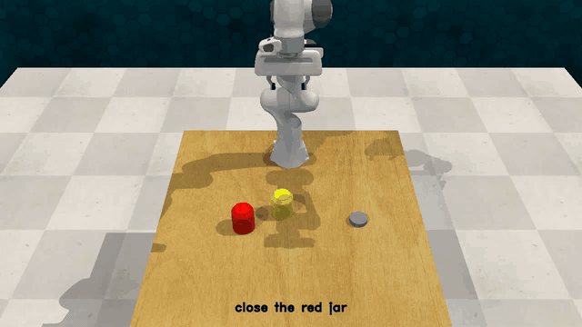
Front
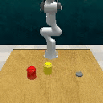
Overhead
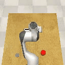
Wrist
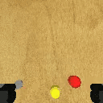
Unseen Task
close microwave
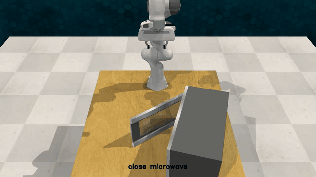
Front
Overhead
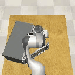
Wrist
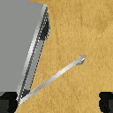
Methods
Two measures assess how much a VLA policy's generated actions rely on task-irrelevant visual regions.
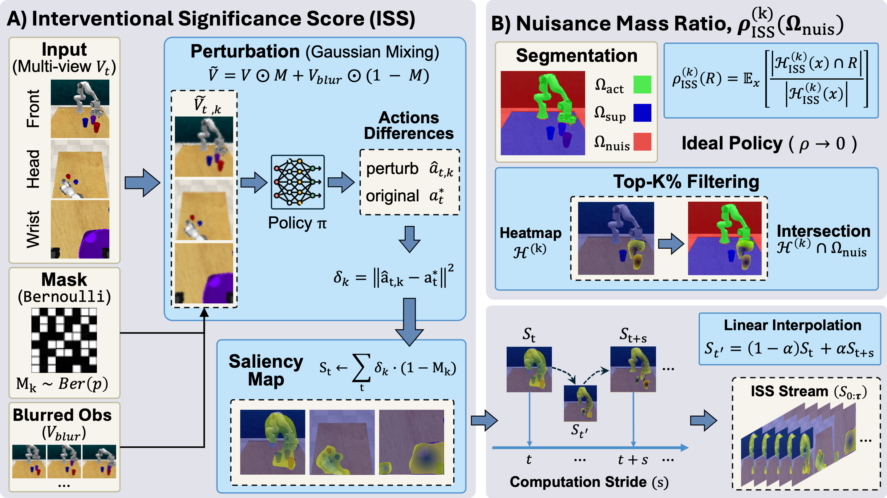
ISS Stream
NMR@k
Demo
Original rollout
Task overview and camera views
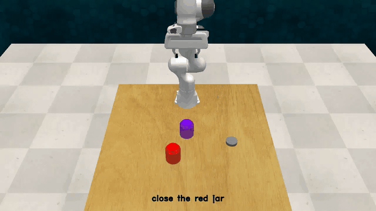
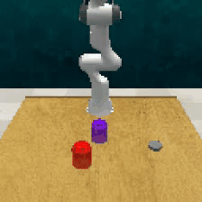
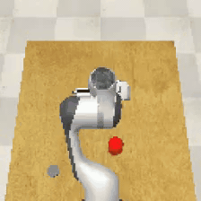
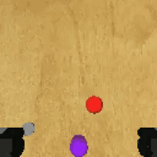
Attribution comparison
Attention score, token norm, and ISS heatmaps
Attention score
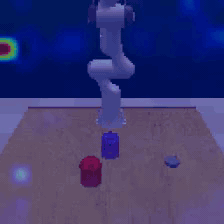
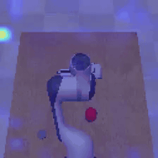
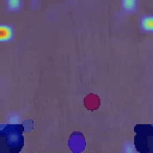
Token norm
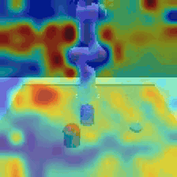
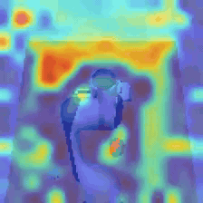
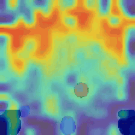
ISS
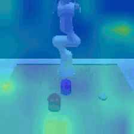
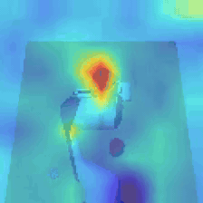
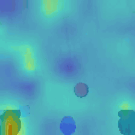
NMR@10
Top-10% ISS overlap with nuisance mask
NMR@10 over rollout steps
Front
LoadingOverhead
LoadingWrist
LoadingAverage
LoadingMask
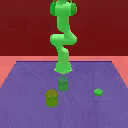
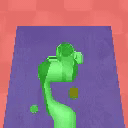
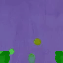
ISS heatmap
Experiments
Correlation
Robustness
Fidelity
Hyper-parameter
BibTeX
@inproceedings{zhang2026embodied,
title={Embodied Interpretability: Linking Causal Understanding to Generalization in Vision-Language-Action Models},
author={Zhang, Hanxin and Xu, Mingshuo and Dhafer, Abdulqader and Yue, Shigang and Dong, Hongbiao and Hao, Zhou Daniel},
booktitle={International Conference on Machine Learning (ICML)},
year={2026}
}